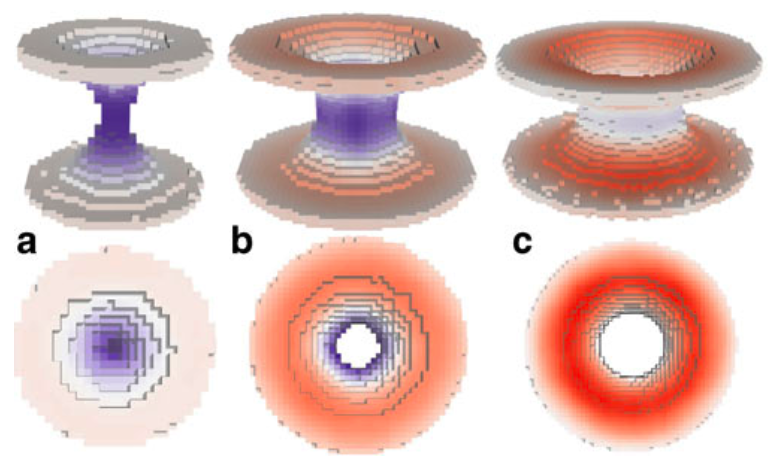

Other tools
Simulated evaporation and scattering
Here an archive containing the necessary files to run a P3HT:PCBM evaporation (solvent is chlorobenzene) and to produce simulated scattering curves as described in:
- R. Alessandri, J. J. Uusitalo, A. H. de Vries, R. W. A. Havenith, and S. J. Marrink. Bulk Heterojunction Morphologies with Atomistic Resolution from Coarse-Grain Solvent Evaporation Simulations. JACS, 2017, 139, 3697-3705. open access
Please check the README files in the respective folders for an explanation on how to submit an evaporation and how to produce the scattering curves from the morphologies.
Here you can find atomistic force fields.
For another example, here an archive containing the necessary files to run a PTEG-1:N-DMBI evaporations (the solvent is now chloroform) as described in:
- L. Qiu, J. Liu, R. Alessandri, X. Qiu, M. Koopmans, R.W.A. Havenith, S.J. Marrink, R.C. Chiechi, L.J.A. Koster, J.C. Hummelen. Enhancing doping efficiency by improving host-dopant miscibility for fullerene-based n-type thermoelectrics. Journal of Material Chemistry A, 5:21234-2124, 2017. online
Please check the README file. Atomistic force fields are available from both the Supporting Information and on figshare.
For further questions, please contact Riccardo Alessandri: r.alessandri@rug.nl
Improved angle potentials
The restricted bending potential is now available in standard GROMACS. It is angle type number 10, see also the manual. This makes the special code referred to below unnecessary. The description of the potential is still valid.
Here you find a customized version of Gromacs with our improved angle potentials for CG simulations, together with example input files: TORSION-WEB.zip
Please consult the readme-file for a detailed explanation on using these potentials, and the following manuscript in which the methods have been introduced:
- M. Bulacu, N. Goga, W. Zhao, G. Rossi, L. Monticelli, X. Periole, D.P. Tieleman, S.J. Marrink. Improved angle potentials for coarse-grained molecular dynamics simulations. JCTC, in press, 2013. DOI:10.1021/ct400219n. abstract
For further questions, please contace Monica Bulacu: m.i.bulacu@gmail.com
do-order
A python script that calculates the order parameter for Martini lipids using version 5 and higher; after 5, gromacs continues with version 2016. Please note that this script has not been tested on many different simulations and might need manual editing.
A python script that calculates the order parameter for Martini lipids. Please note that this script has not been tested on many different simulations and might need manual editing.
Martini lipid .itp generator
A python script to help creates customized Martini lipid topologies based on the Martini 2.0 building blocks and rules. Warning, it is very easy to create unrealistic topologies so only use if you know what you are doing and with careful testing.
Cross sectional area calculation
Usage
We propose here a gromacs tool that can be used to calculate the cross sectional area of membrane protein (or similar inclusion) in membrane. Schematically illustrated in the next figure:

For more details, see paper (please cite it if you use this code):
Compile it as any tool done with gromacs template. Then just run it normally:
g_density3Darea -f traj.trr -s topol.tpr
Two groups are required in this calculation (2 is the answer to the “How many groups?” question): the first one involves all non-protein beads, the second the protein beads. With -sl you can change the 3D density grid size. You need to have the electrons.dat in your directory even thought it is not used (this is stupid and should be fixed!).
The area profile is obtained in area.xvg (three columns have the same number for historical reasons, this should be fixed as well). It can be visualized in 3D by opening the proteinformDENS.dat with rasmol, choosing Colors > Temperature and Slab mode.
If you want to calculate the mechanical energy change of a bilayer due to the inclusion, as done in the publication, you need to calculate the pressure profile outside inclusion. This can be done by using script similar to this:
paste proteinformDENS.dat 3Dpp.dat | awk '{if($10>0){pp[$13]+= $14+$18)/2;
sum[$13]++;}}END{for(i=0;i0){print i" "pp[i]/sum[i]} else{print i" 0"}}}' > test.datThe line above calculates the average lateral pressure profile outside the protein (this idea should be described in the publication).
proteinformDENS.dat and 3Dpp.dat (3D pressure field, ascii format) should be the output from g_density3Darea. Grid spacing must be exactly the same.
For more information contact Samuli Ollila (oollila@cc.hut.fi).
Remark
The code DOES NOT remove rotation or translation and the protein should be whole inside the box in all frames. This can be done by the following way (to be adapted to each system of course):
trjconv -pbc nojump
trjconv -fit transxy
trjconv -pbc mol
trjconv -fit rotxy+transxyMorphological Image Analysis
Morphological Image Analysis Tool
When analyzing computer simulations of mixtures of lipids and water, the questions to be answered are often of a morphological nature. They can deal with global properties, like the kind of phase that is adopted or the presence or absence of certain key features like a pore or stalk, or with local properties, like the local curvature present at a particular part of the lipid/water interface. While in principle all of the information relating to the global and local morphological properties of a system can be obtained from the set of atomic coordinates generated by a computer simulation, the extraction of this information is a tedious task that usually involves using a visualization program and performing the analysis by eye. Here we present a tool that employs the technique of morphological image analysis (MIA) to automatically extract the global morphology—as given by Minkowski functionals—from a set of atomic coordinates, and creates an image of the system onto which the local curvatures are mapped as a color code. The implementation is intended for the analysis of mixtures of lipids and water obtained from molecular dynamics simulations, but is also in principle applicable to all kinds of coordinates that describe binary mixtures, and is independent of the model and the method used to generate the coordinates.

Details of the method are published in:
- M. Fuhrmans, S.J. Marrink, A tool for the morphological analysis of mixtures of lipids and water in computer simulations, J. Mol. Mod. 17:1755-1766, 2011. open access
The required c programs can be downloaded here: MIA-source
A description how to use the package: MIA.pdf
For questions please contact Marc Fuhrmans (m.fuhrmans@gmail.com)
3D pressure field
A customised version of Gromacs for the calculation of local pressure fields is available here. It is not meant for actual simulation, but rather for post-simulation trajectory analysis using the -rerun option of mdrun. Currently, it is not parallelised so you have to run it on only one CPU.
If you use the code, please cite:
- Ollila et al. (2009) 3D Pressure Field in Lipid Membranes and Membrane-Protein Complexes. Phys. Rev. Lett. 102: 078101 [DOI: 10.1103/PhysRevLett.102.078101]
Here are some useful tools for the analysis of the resulting local pressure field grid:
If you have further question, you can contact either Samuli Ollila (oollila@cc.hut.fi) or Martti Louhivuori.
Mean-field boundaries
Implicit, mean-field force approximation (MFFA) boundary potentials offer a computationally efficient method to simulate e.g. large vesicular systems in spherical liquid droplets. For further information about the method see
- Risselada et al. (2008) Application of mean field boundary potentials in simulations of lipid vesicles. J Phys Chem B 112:7438-7447
In order to use the method you need Gromacs/MFFA, which is a custom version of Gromacs that supports MFFA potentials. Simple instructions and an example system also available.